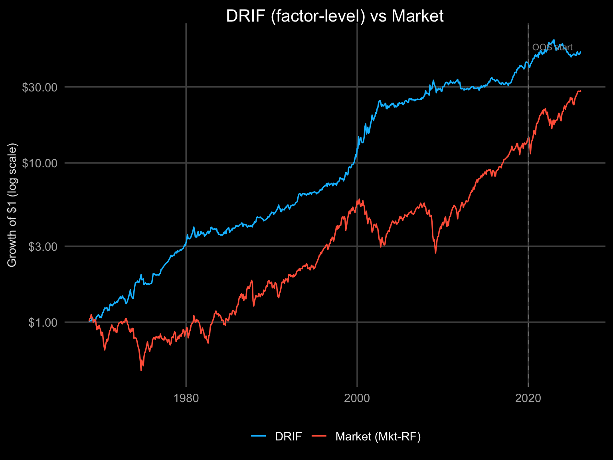

Based on Alpha Architect research: a regression on the full distribution of past 21 daily returns — both chronological order and rank order — predicts next-month returns. The original paper uses elastic net; this implementation uses PCA-OLS (5 principal components) as glmnet is not in the current Nix shell. This captures more information than single-signal approaches like MAX or momentum.
Factor-level implementation: Each month, use an expanding-window PCA-OLS model to predict next month’s factor return from 42 features (21 chronological + 21 rank daily returns). Go long the top-2 predicted factors. Monthly rebalance.
Key insight from the paper: Chronological order (when returns occurred) is more predictive than rank order (how extreme they were). Timing > magnitude. The DRIF signal subsumes many existing anomalies including short-term reversal, volatility effects, and the MAX signal.

DRIF vs Market. Y: growth of $1 (log scale). Blue = DRIF (top-2 factors by elastic net prediction, equal weight). Red = Market factor (Mkt-RF). Dashed line = OOS start (2020). Uses PCA-OLS fallback (glmnet not in current Nix shell). Source: Fama-French FF5 + Momentum via hd_factors().

DRIF vs Factor MAX. Both strategies applied to the same FF5+Momentum factor universe. DRIF uses 42 features (21 chronological + 21 rank daily returns) via elastic net; Factor MAX uses only the single highest daily return. DRIF achieves higher returns by capturing the full daily return distribution.
For each factor, each month:
- Collect the past 21 trading days of daily returns
- Create two feature sets:
- Chronological (c1…c21): returns in time order (c1 = oldest, c21 = most recent)
- Rank (r1…r21): returns sorted by magnitude (r1 = worst, r21 = best)
- Predict next month’s return using elastic net (or PCA-OLS fallback) trained on expanding window
- Select top-2 factors by predicted return, equal weight
- Rebalance monthly
Why two dimensions? Chronological features capture price pressure, liquidity effects, and momentum-reversal dynamics. Rank features capture behavioral biases around extreme returns. Together they explain more variance than either alone.
Expanding window: Training starts after 60 months of data. Each subsequent month adds one month of training data — no lookahead bias.
The Alpha Architect paper finds chronological features are ~1.7x more predictive than rank features:
| Dimension | Monthly Spread | Intuition |
|---|---|---|
| Chronological | ~1.5% | Recent price pressure, liquidity, order flow |
| Rank | ~0.9% | Behavioral biases around extreme returns |
| Combined (DRIF) | ~1.6% | Full daily return distribution |
Our factor-level implementation applies the same logic: the sequence of daily factor returns contains more information than just the extremes (MAX signal) or the average (momentum).
- Research: A Unified Framework for Anomalies based on Daily Returns — Alpha Architect (2026)
- Comparison: Factor MAX — simpler signal using only max daily return
- Data: FF5 + Momentum via Ken French Data Library
- Methodology: Expanding window, PCA-OLS (glmnet unavailable in current Nix shell)
The strategy rotates among 5 Fama-French factors (daily data from 1963):
| Factor | Description | Source |
|---|---|---|
| HML | High Minus Low (value) | FF5 |
| SMB | Small Minus Big (size) | FF5 |
| RMW | Robust Minus Weak (profitability) | FF5 |
| CMA | Conservative Minus Aggressive (investment) | FF5 |
| Mom | Momentum (winners minus losers) | Ken French |
Benchmark: Mkt-RF (market excess return). 42 features per factor-month (21 chronological + 21 rank).
This is a factor-level implementation — rotating among 5-6 academic factors. The original DRIF paper applies the signal cross-sectionally to individual stocks (3000+ in CRSP).
Key differences: - Cross-section size: 5 factors vs 3000+ stocks — much less statistical power for decile sorts - Feature independence: Factor daily returns are more correlated than stock returns - No shorting: We go long top-2 factors; the paper shorts bottom decile stocks - PCA-OLS: Using 5-PC OLS as fallback (glmnet would give elastic net regularisation)
A proper stock-level implementation requires ~500+ US equity tickers (see #6 for international equities expansion).